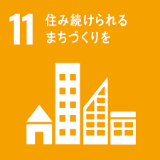

フランスは西ヨーロッパに属する国です。本土は西ヨーロッパですが植民地を保有していた時代の名残で世界各地に領土が存在します。
国土の大半が緩やかな丘陵地や平野であり東にアルプス山脈が、南西にピレネー山脈があるほか地中海、大西洋、北海に接している。気候は西部では西岸海洋性気候、南部では地中海性気候、東部では大陸性気候となっている
気候の関係や国土の大半が緩やかであることからか国土の半分以上が農地などになっておりEU一の農業大国となっている
また海外領土は多様な地域に分布しているのでその分多様な産業が行われている
EUによりヨーロッパ諸国と様々な面で繋がっているほか元植民地だった国とも（複雑に）繋がりを持っている

ヨーロッパということから古くから発展が進んでおりエッフェル塔をはじめとした様々な世界遺産を保有している

また文化も発展しており美食や芸術に関しても有名である
フランス政府はFrench Tech Green 20（FT Green 20）を立ち上げ環境問題に対して働きかけている。FT Green 20は環境問題を解決しうるスタートアップを20社を選び支援するプロジェクトで詳細は省きますがその取り組みの内容から判断するとこれにより
への対策を行っているととらえられる